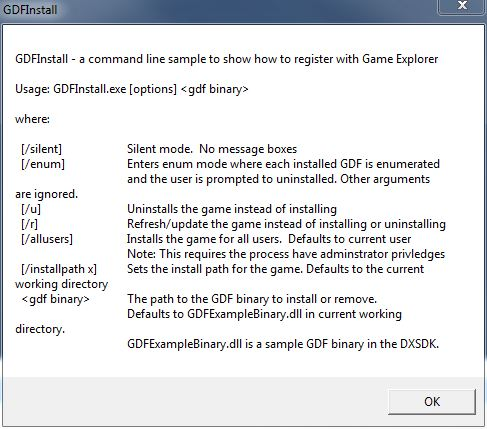

The latest version of this sample is hosted on GitHub.
The GameuxInstallHelper is a DLL for use with install/setup programs to handle registration of Game Definition Files (GDF) with Windows Vista, Windows 7, and Windows 8 desktop games. For Windows 7 and Windows 8, the utility registers the
GDFv2 schema data file using IGameExplorer2. For Windows Vista, the utility handles the additional manual steps required for registering a GDFv2 schema data file using the
IGameExplorer interface.
The package also includes GDFInstall which is a command-line test tool and utility for using the GameuxInstallHelper DLL. It supports a number of command-line options and switches. Run it with
/? to see this help dialog.

The technical article Windows Games Explorer for Game Developers covers usage of this install helper.
This utility was originally published as part of the legacy DirectX SDK. This version does not require the DirectX SDK to build and can be built using Visual Studio 2010 or Visual Studio 2012.
Note: This utility is not required or used for Metro style applications. For details on how you use a GDF file to provide game ratings information for Metro style applications, see Windows game publishing requirements.
The GameUxInstallHelper DLL is intended to ber called by a install/setup program which handes all UI requirements, so there is no localization support.
The Visual Studio 2010 project files can be updated to use Visual Studio 2012 automatically. Be sure to add to the Processor Definitions of all configurations
_WIN32_WINNT=0x0600 so the resulting DLL/EXE will be compatible with Windows Vista, Windows 7, and Windows 8.
The DirectX SDK (June 2010) contained the previously released version of this utility. This version is similiar with the following improvements:
GameExplorerUpdate API and /r command-line option for updating/refreshing the GDF data
CreateShortcut
/analyze warnings resolved Games for Windows Technical Requirements (TR 1.1 and 1.2)
Games for Windows Test Cases (TR 1.1 and 1.2)